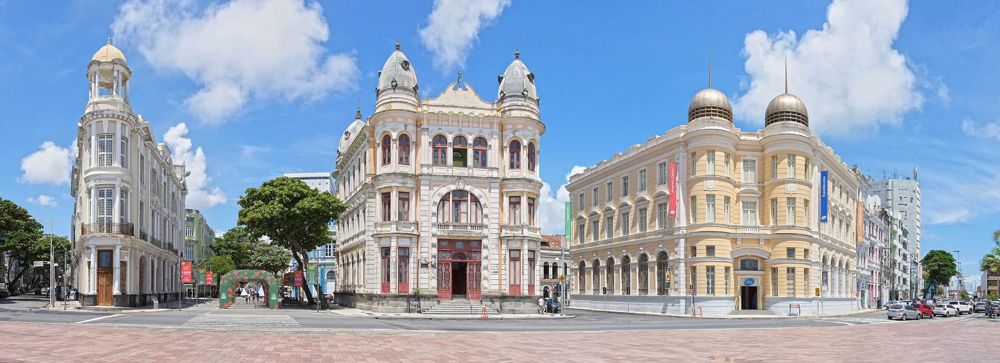

Marco zero
A popularização do nome Marco Zero aconteceu desde 1938, devido à instalação
do símbolo geográfico na parte central da praça.Ele foi uma doação do Automóvel
Clube de Pernambuco. Além disso, há nela uma estátua de bronze de 2,80 metros,
de autoria do escultor francês Félix Charpentier.O Marco Zero no Recife Antigo
é um dos pontos turísticos mais importantes para quem deseja conhecer a capital
de Pernambuco. Isso porque é um local de importância histórica que conta o nasci
mento da cidade e possui forte referência cultural.
Além disso, o Marco Zero recebe, anualmente, diversas comemorações e manifestações
e também é um lugar muito famoso para quem busca eventos como o Carnaval.
